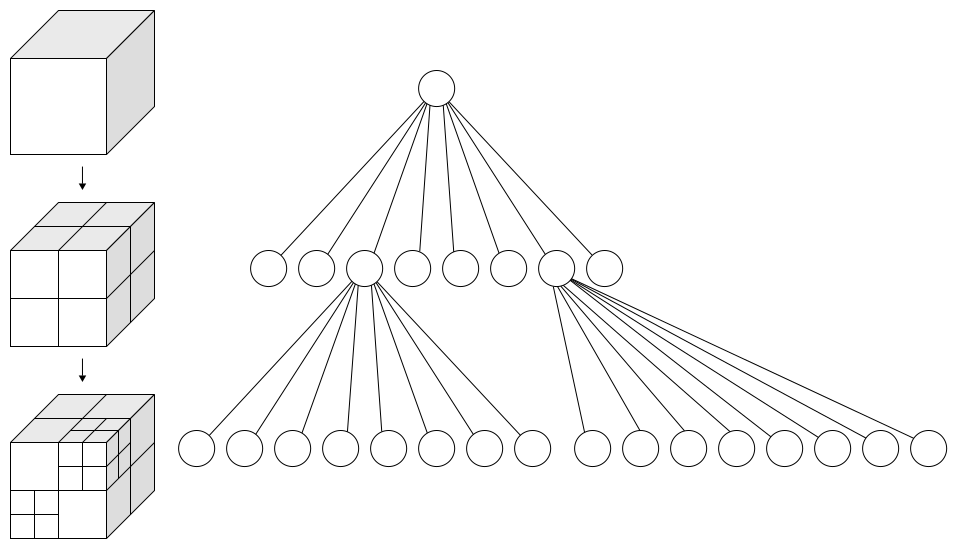
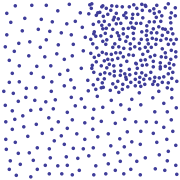
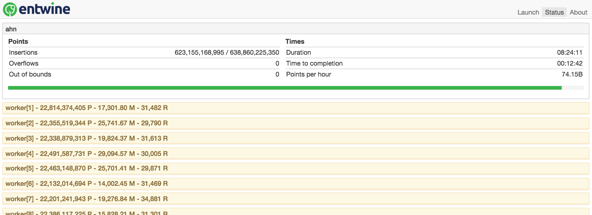

500+ Billion Points
Organizing Point Clouds as Infrastructure
Connor Manning
The problem
Can we put Iowa's lidar in a web browser?
Iowa lidar collection
- ≈ 37,000 files
- ≈ 170 billion points
- > 4.5 TB uncompressed
- > 400 GB compressed
A point cloud service
- Client-controlled access
- Hierarchical
- Random-access
- Dynamic resolution
- Flexible
- Fragmented dataset → single logical unit
Adapting the data as-is?
- Difficult to access
- Difficult to manage
- Visualization only in pieces
Yes, Iowa is flat
Need for reorganization
- Cannot meet these needs with a meta-index
- Would require too much dynamic work
- Up-front cost is ok to trivialize later work
Constraints
- Memory
- Losslessness
- Modifiability
- Visualization

Assumptions
- Availability of scalable cloud computing
- A parallelizable problem
- Distributed filesystem

Lone Star Geyser
Geysers are kind of like clouds, but cooler.
Data source: RS/GIS CRREL USACE
Goal: a massive octree
- Increase depth → increase resolution
Quadtree depth layering
Data source: Vanuatu village, Nepal.
Global DIRT
- Spatially distinct → trivially parallelizable

Quadtree splitting
By David Eppstein, Public Domain, 🔗
- Stable & flexible
- Insertion order doesn't matter
- No concept of "balance"

By contrast: a KD-tree - where order matters
By KiwiSunset at the English language Wikipedia, CC BY-SA 3.0, 🔗
Octrees
- The basic implementation is pointer-based
- > 10 TB just for the (64-bit) pointers for Iowa

A classical octree
By WhiteTimberwolf - Own work, CC BY-SA 3.0, 🔗
Point spacing
- Important for visualization
- Requires per-point resolution
- (as opposed to per-bucket)

Lack of spacing guarantee - effect on visualization
Buckets of points?
- A common approach
- Minimum addressable node consists of n points
- Calculating a grid position:
- bucketWidth * (p - minBucketBound) / bucketSteps


Point bucketing
Source: Potree documentation 🔗
A matter of scale
- Some numbers:
- Bucket size = 262,144
- Average depth = 10
- Expected comparisons: > 1012
Linearizing the tree
- For a single depth: Z-order curve
- Entirely positionally based - zero theoretical waste
Z-order curve for depth 3
By user Jace,
🔗
- Typically, multiple depths → string-encoding
∴ 0 ≠00
- However, it's possible to globally linearize
- Doing this has some interesting properties
Z-order curve for depth 3
By David Eppstein, based on an image by Hesperian. Own work, CC BY-SA 3.0, 🔗
Entwine's method
TODO - diagram here
Properties
- Spacing guarantee in 1 comparison per depth
- Can query tree depths with inequalities
- Concurrency-friendly
- Traversing the tree is very efficient
Quadtree layering
From Towards Building Deep Networks with Bayesian Factor Graphs by Buonanno & Palmieri 🔗
Chunk splitting
Discrete steps?
- Split bucketed node when numPoints > bucketSize
- Will happen to high-traffic nodes frequently
- Concurrent throughput is reduced
Better: a priori
- Trivial to bound chunks spatially - parallelizable!
- Sparse-chunking optimization
- Density multiplier decreases after
log4(numPoints)
- ...so stop splitting spatially near that depth
- Order of magnitude of key reduction
-
→ Order of magnitude of IO reduction
More tricks
- Aggressive over-optimization
- Heuristic tuning - over lots of data
- Custom big-integer library: little-big-int
- Custom memory pool: splice-pool
Results

Netherlands indexing pace
- 28 instances
- One instance: 30 cores, 60GB
- Per-instance pace: ≈ 2.65B points/hour
- Total cost: ≈ $400
- Total time: < 9.5 hours
What do we get?
Rijksmuseum
How can we use it?
Greyhound
- A simple RESTful HTTP server
http://data.greyhound.io/resource/iowa/infohttp://data.greyhound.io/resource/iowa/read?
bounds=[-10758084,4793192,-361921,-10034124,5517152,362039]&
depth=10&
compress=true&
schema=[{name:"X",type:"floating",size:"8"}, ...]
Other projects
- Speck.ly 🔗
- Potree fork 🔗
- PDAL reader (in progress) 🔗
Using it
entwine build
-i ~/data/iowa-o ~/entwine/iowa-r EPSG:3857-t 12